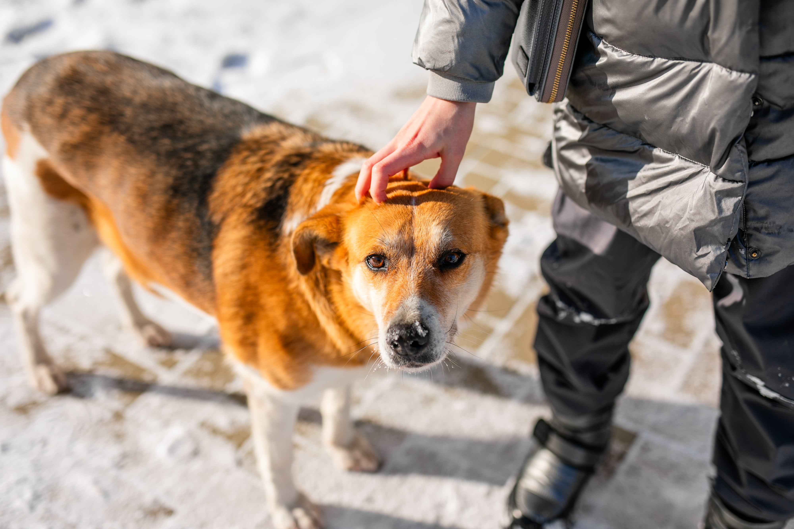

-
Unisciti a noi
-
Ogni giorno, tanti animali aspettano una seconda possibilità: uno sguardo gentile, una mano amica, qualcuno che scelga di prendersi cura di loro, anche solo per un momento.
Fare volontariato significa donare il proprio tempo, la propria presenza e il proprio affetto. Non servono esperienze particolari, ma solo il desiderio di esserci. Ogni gesto, anche il più piccolo, può davvero fare la differenza.
Partecipando, non solo sosterrai il nostro lavoro, ma regalerai serenità e gioia a molti animali che in passato non hanno ricevuto abbastanza amore.

Compila il modulo a seguire e unisciti a noi
Ti contatteremo presto per conoscerti e accompagnarti nei primi passi come volontaria o volontario.